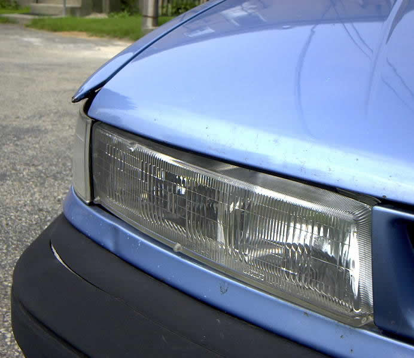
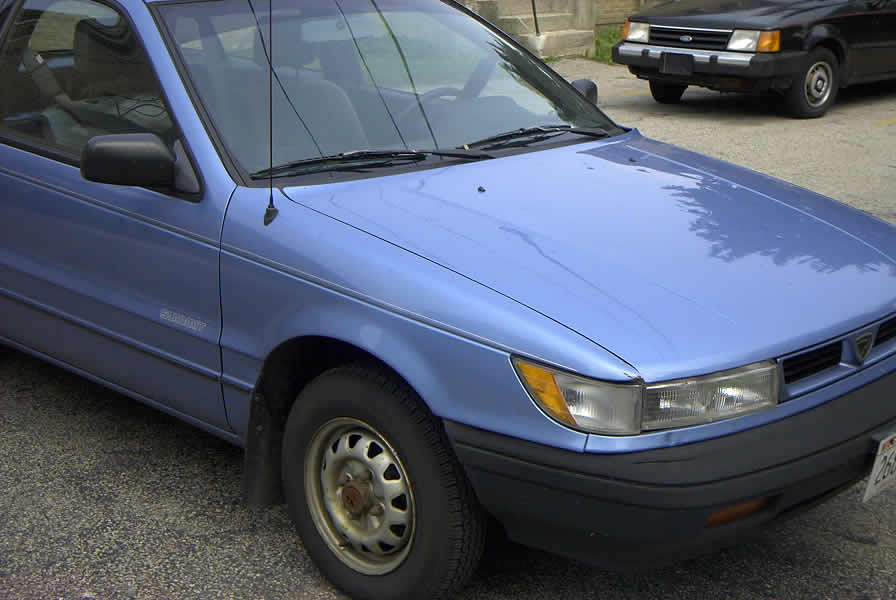
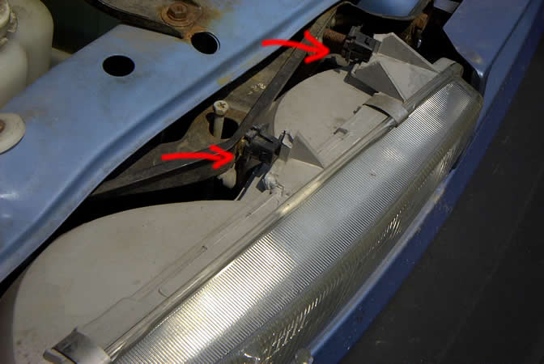
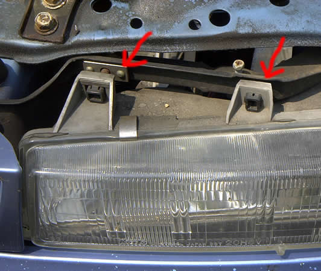
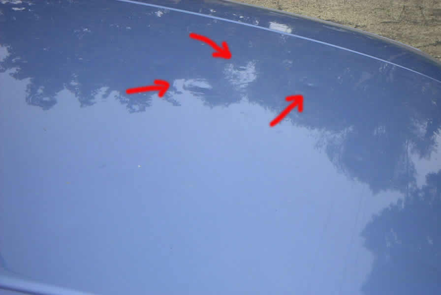

The picture above shows the result of a minor accident I had a year or two ago. There was a lot of snow on the street, and my car slid into a parked vehicle. It was a low-impact collision (10-20 MPH), and only did minor damage. You can see from this picture that the headlight is pushed in about an inch or so. Also, there is a little crack in the black plastic surrounding the bumper. The blue body panel to the right of the car hood looks like a little spear sticking out past the rest of the hood, because it wasn't bent back during the accident. There is a little bit of rust on the tip of the "spear." Other than that, I don't think the car has any external body rust.

The picture above shows the same right front corner of the car, from a few steps back. From this distance, the dent is barely noticeable in the photograph.

The picture above shows the right front headlight, with the hood raised. I've drawn two red arrows pointing to two black mounting brackets that are supposed to hold the headlight in place. The accident cracked and broke away the gray plastic attached to the headlight which was supposed to connect to the mounting brackets. However, the headlight is still securely in place. I've driven it this way for a good year without any problems.

The picture above shows the LEFT front headlight, which was undamaged. You can see from this picture how the mounting brackets attached to the headlight before the accident.

In addition to the dent in the right front, there is some cosmetic damage from a hailstorm a couple of years ago. The hail made a couple of dozen tiny dents in the exterior of the car, but didn't crack the paint job. I've drawn arrows pointing to three of the hail dents, but you may have a hard time seeing them in this photograph. They aren't very noticeable unless you're standing close to the car and look for them.